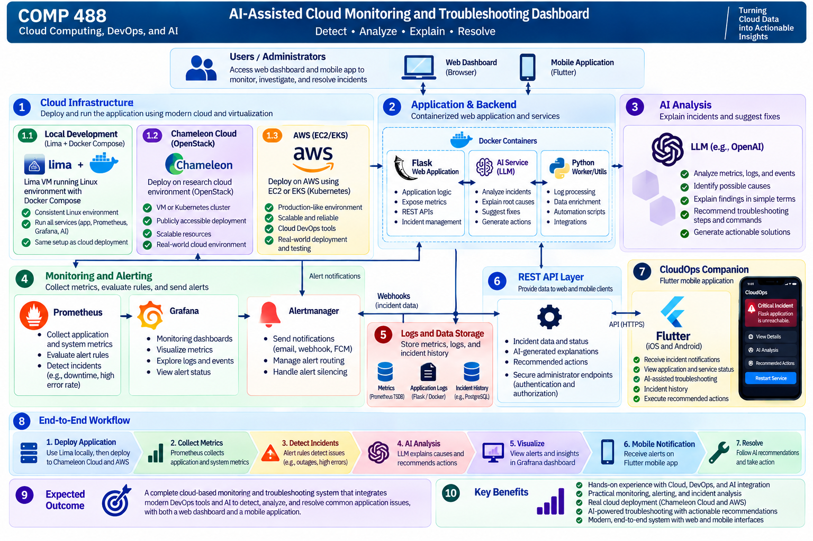

Intermediate Project Report
AI-Assisted Cloud Monitoring and Troubleshooting Dashboard
Student: Khalidou Bass
Course: COMP 488 – Cloud Computing, DevOps, and AI
Instructor: Gregor von Laszewski
Date: October 2026
Status: In Progress – Monitoring and Rule-Based Troubleshooting Implemented
1. Project Overview
The goal of this project is to develop an AI-Assisted Cloud Monitoring and Troubleshooting Dashboard that monitors a containerized web application, detects common operational issues, and uses artificial intelligence (AI) to explain possible causes and recommend troubleshooting actions.
The project combines cloud computing, DevOps, monitoring, containerization, automation, and AI into a practical system for understanding and responding to application incidents.
As an extension, the project will explore CloudOps Companion, a cross-platform mobile application developed using Flutter. This application will allow administrators to receive incident notifications, monitor application health, and access AI-assisted troubleshooting recommendations remotely.
The primary objective remains to build a reliable end-to-end cloud monitoring and troubleshooting prototype.
2. System Overview and Implementation
The system follows a phased implementation approach. The core monitoring pipeline, incident API, and rule-based troubleshooting are implemented. LLM-assisted analysis, performance evaluation, and cloud deployment remain planned:
- Application Deployment: Deploy a containerized Python/Flask web application locally and to selected cloud environments.
- Monitoring and Metrics Collection: Collect application performance metrics, availability information, and relevant operational data.
- Incident Detection: Detect selected incidents, including application outages, elevated HTTP error rates, and resource-related problems.
- AI-Assisted Analysis: Use an AI component to interpret monitoring information, explain possible causes, and recommend troubleshooting actions.
- Web Dashboard: Visualize application health, monitoring metrics, detected incidents, and troubleshooting information.
- Mobile Incident Monitoring: Extend the system through a Flutter mobile application for remote incident notifications and monitoring.
- Administrator-Approved Remediation (Optional): Explore secure, predefined corrective actions that administrators can explicitly approve.
Target System Architecture

The target architecture consists of:
- Application Layer: A containerized Flask application exposing health information and monitoring metrics.
- Monitoring Layer: Prometheus for metrics collection and alert evaluation.
- Visualization Layer: Grafana for monitoring dashboards and performance visualization.
- Troubleshooting Layer: Implemented rule-based incident explanations and recommendations, with secure LLM-assisted analysis planned.
- Backend API Layer: Flask-based REST APIs for providing incident information to client applications.
- Mobile Layer: CloudOps Companion, a Flutter application for remote monitoring and notifications.
- Cloud Infrastructure Layer: Local Docker deployment and selected cloud environments for deployment and evaluation.
The mobile application will communicate with the backend through authenticated APIs rather than accessing infrastructure management interfaces directly.
3. Technologies
The project is expected to use:
| Technology | Purpose |
|---|---|
| Python / Flask | Web application, backend services, and REST APIs |
| Docker / Docker Compose | Containerization and local service orchestration |
| OrbStack | Optional alternative to Docker Desktop for evaluation |
| Chameleon Cloud / OpenStack | Planned research-cloud deployment |
| AWS | Planned public-cloud deployment and comparison |
| Prometheus | Metrics collection, monitoring, and incident detection |
| Grafana | Monitoring dashboards and visualization |
| LLM / AI Integration | Incident analysis and troubleshooting recommendations |
| Flutter / Dart | Cross-platform mobile companion application |
| Firebase Cloud Messaging | Planned mobile push notification delivery |
| GitHub / GitHub Actions / Makefile | Version control, automation, testing, and deployment workflows |
The final cloud deployment environments, AI integration, and mobile notification mechanism will be selected based on project requirements, available resources, and implementation feasibility.
4. Project Objectives
The main objectives are to:
- Develop and containerize a sample web application.
- Deploy and monitor the application locally and in selected cloud environments.
- Collect and visualize application health and performance metrics.
- Detect selected operational incidents using monitoring rules.
- Integrate AI to explain incidents and recommend troubleshooting actions.
- Evaluate monitoring behavior, failure-detection latency, and incident-analysis performance.
- Demonstrate an end-to-end monitoring and troubleshooting workflow.
Extended Objectives
Subject to available development time:
- Develop a Flutter mobile companion application.
- Deliver incident notifications to administrators.
- Display application health, active alerts, and incident history on mobile devices.
- Present AI-generated troubleshooting recommendations through the mobile interface.
- Explore secure, administrator-approved corrective actions for selected incidents.
5. Expected Outcomes and Deliverables
The expected outcome is a working prototype demonstrating how cloud monitoring and AI can work together to identify, analyze, and troubleshoot common application issues.
Core Deliverables
- A functional containerized Flask application.
- Local and selected cloud deployment configurations.
- Prometheus-based metrics collection and alerting.
- Grafana monitoring dashboards.
- Detection and simulation of selected application incidents.
- AI-generated incident explanations and troubleshooting recommendations.
- Monitoring evaluation, including alert validation and timing measurements.
- Recorded experimental results for comparing monitoring and troubleshooting performance.
- Source code, documentation, and a final project demonstration.
The primary workflow will be:
Application → Monitoring → Incident Detection → AI Analysis → Troubleshooting Recommendation
Extended Deliverable: CloudOps Companion
The project will explore a Flutter-based mobile prototype with the following capabilities:
- View monitored applications and their operational status.
- Receive notifications when incidents are detected.
- Review incident details and AI-assisted troubleshooting recommendations.
- Access incident history and resolution status.
An advanced demonstration may include an authenticated administrator approving a predefined remediation action, such as restarting a stopped application service.
The mobile application will complement the web dashboard rather than replace it.
6. Project Scope
The primary goal is to complete a reliable end-to-end prototype rather than develop a production-scale monitoring platform.
Core Scope
The implementation will focus on:
- Containerized application deployment.
- Application and system monitoring.
- Monitoring dashboards and visualizations.
- Incident detection and alerting.
- AI-assisted incident explanation.
- Troubleshooting recommendations.
- Basic automation, performance evaluation, and documentation.
- Security considerations for logs, incident data, and local versus hosted LLMs.
Extended Scope: CloudOps Companion
Subject to available development time, the Flutter mobile application will focus on:
- Application and service status monitoring.
- Incident notifications.
- AI-generated incident explanations.
- Troubleshooting recommendations.
- Incident history and resolution tracking.
If time permits, the project may demonstrate administrator-approved remediation through a secure backend API.
Any remediation functionality will require authenticated access, explicitly permitted operations, administrator confirmation, and action logging.
AI-generated recommendations will not be executed automatically without appropriate authorization and safeguards.
Advanced features such as comprehensive cloud resource management, autonomous remediation, and production-scale incident orchestration are outside the initial scope.
7. Development Timeline
The project will be developed incrementally during the remainder of the semester.
| Phase | Activities |
|---|---|
| Phase 1: Application Development | Develop and containerize the Flask application |
| Phase 2: Monitoring and Visualization | Integrate Prometheus and Grafana |
| Phase 3: Incident Detection | Validate alert firing and incident detection; incident API and rule-based troubleshooting implemented |
| Phase 4: Performance Evaluation | Measure detection latency, alert timing, and API response times; record experimental results |
| Phase 5: Secure AI-Assisted Troubleshooting | Integrate an LLM, protect sensitive incident data, and evaluate recommendations |
| Phase 6: Cloud Deployment and Evaluation | Deploy the monitoring system to at least one cloud environment (Chameleon Cloud/OpenStack or AWS), validate its operation, and evaluate deployment characteristics; Lima is not required |
| Phase 7: Optional Mobile Extension | Develop a Flutter prototype for incident notifications and remote monitoring, subject to time |
| Phase 8: Integration and Demonstration | Complete testing, documentation, performance evaluation, and the final demonstration |
The core monitoring and AI-assisted troubleshooting functionality will take priority. The mobile extension will be developed incrementally without compromising the primary project objectives.
8. Monitoring and Alert Validation
The monitoring system was tested locally using Docker Compose, Prometheus, and a containerized Flask application. Two controlled experiments validated incident detection and alert recovery.
8.1 Application Downtime
The Flask container was stopped while Prometheus and Grafana remained running.
- Alert:
ApplicationDown - Condition:
up{job="flask-app"} == 0for 15 seconds - Observed behavior: Prometheus reported the alert as
pending, thenfiring. - Recovery: After restarting Flask, Prometheus cleared the alert.
- Result: Detection and recovery verified.
8.2 High HTTP Error Rate
A temporary, loopback-restricted endpoint generated HTTP 500 responses inside the Flask container. Error simulation was enabled only for the experiment.
- Alert:
HighErrorRate - Condition: More than 5% HTTP 5xx responses over a one-minute rate window, sustained for 30 seconds
- Requests generated: 481
- HTTP 500 responses: 481
- Test duration: 100.2 seconds
- Observed Prometheus error ratio: Approximately 93.68%
- Observed alert state:
firing - Recovery: After restoring the normal container configuration, Prometheus reported no active alerts.
- Result: Detection and recovery verified.
The simulation endpoint was confirmed to return HTTP 404 after the experiment, including for requests originating inside the container.
8.3 Automated Testing
The project test suite completed successfully with 11 tests passed and no failures.
8.4 Alert Detection and Recovery Latency
Three controlled trials measured how quickly Prometheus detected application downtime and cleared the ApplicationDown alert after Flask restarted.
The experiment stopped the Flask container using Docker Compose, polled the Prometheus rules API every 0.5 seconds, and restarted the application after observing the alert in the firing state.
Prometheus was configured with a 5-second scrape interval, a 5-second evaluation interval, and a 15-second alert duration.
| Metric | Trial 1 | Trial 2 | Trial 3 |
|---|---|---|---|
| Detection latency | 26.171 s | 24.147 s | 23.657 s |
| Recovery latency | 9.795 s | 9.275 s | 9.787 s |
| Detection from shutdown initiation | 29.545 s | 27.504 s | 27.101 s |
Across the three trials:
- Mean detection latency: 24.658 seconds
- Mean recovery latency: 9.619 seconds
- Detection latency range: 23.657–26.171 seconds
- Recovery latency range: 9.275–9.795 seconds
All three experiments completed successfully. Following the third trial, the Flask application returned HTTP 200, and Prometheus reported the alert as inactive and healthy.
These measurements represent client-observed alert transitions. Detection was measured from completion of the Docker stop command, while recovery was measured from completion of the Docker start command. They do not represent exact internal Prometheus event timestamps.
The experiment implementation, methodology, and results are documented in benchmarks/alert_latency/README.md.
8.5 Limitations and Next Steps
The experiments validate alert firing, resolution, and client-observed detection and recovery latency in the local environment. However, only three latency trials were conducted, and exact internal Prometheus transition times and notification delivery latency remain unmeasured.
API response times and workload performance have been evaluated separately in Section 9.
Future evaluation will include additional alert latency trials, cloud deployment comparisons, and secure LLM-assisted troubleshooting. The current troubleshooting implementation is rule-based; LLM integration remains planned.
9. Performance Evaluation
The containerized Flask application was benchmarked locally to evaluate HTTP response latency, throughput, and reliability under different workloads.
A reusable Python benchmarking script was developed to send sequential
and concurrent requests to the /health endpoint and record response times.
9.1 Baseline and Concurrent Load Testing
| Metric | Sequential Baseline | Concurrent Baseline | Larger Load |
|---|---|---|---|
| Requests | 100 | 100 | 1,000 |
| Concurrent workers | 1 | 10 | 10 |
| Successful requests | 100 | 100 | 1,000 |
| Failed requests | 0 | 0 | 0 |
| Average latency | 3.35 ms | 9.95 ms | 7.47 ms |
| P95 latency | 5.29 ms | 34.77 ms | 10.28 ms |
| Throughput | 297.26 req/s | 969.02 req/s | 1,330.52 req/s |
Concurrent requests increased observed throughput compared with the sequential baseline, although individual response times also increased.
9.2 Sustained Load Testing
A longer experiment repeatedly executed batches of 1,000 HTTP requests using 10 concurrent workers for approximately 31 seconds.
| Metric | Result |
|---|---|
| Duration | 31.00 seconds |
| Total requests | 29,000 |
| Successful requests | 29,000 |
| Failed requests | 0 |
| Overall throughput | 935.61 req/s |
| Average latency | 9.75 ms |
| Median latency | 7.88 ms |
| P95 latency | 17.61 ms |
| P99 latency | 26.67 ms |
| Maximum latency | 46.90 ms |
All 29,000 requests completed successfully during the experiment.
The sustained throughput was lower than the throughput measured during the shorter 1,000-request experiment, demonstrating the importance of evaluating performance over different test durations.
9.3 Limitations and Future Evaluation
These results were obtained using the Flask development server in a local Docker Compose environment. The benchmark targeted a lightweight health-check endpoint rather than computationally intensive application functionality.
The sustained experiment used repeated short batches rather than one uninterrupted workload. Consequently, these measurements should not be interpreted as production capacity guarantees.
Future work will include longer continuous tests, resource utilization measurements, cloud deployment comparisons, and evaluation using a production WSGI server.
The reusable benchmarking script, detailed methodology, and complete
results summary are documented in benchmarks/README.md.
10. Conclusion
This project aims to demonstrate how cloud computing, DevOps monitoring, and AI-assisted troubleshooting can be integrated into a practical system for detecting and understanding application incidents.
By combining a containerized application, Prometheus, Grafana, cloud infrastructure, and AI-generated recommendations, the project will provide an end-to-end demonstration of application monitoring and incident response.
The planned CloudOps Companion extension will further explore how administrators can receive notifications and respond to operational issues remotely through a Flutter mobile application.
Together, these components will illustrate a practical approach to improving cloud application visibility, incident understanding, and operational responsiveness.